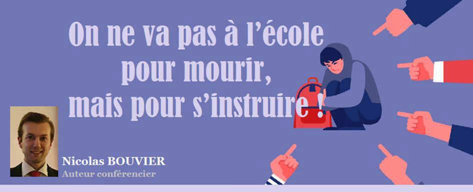
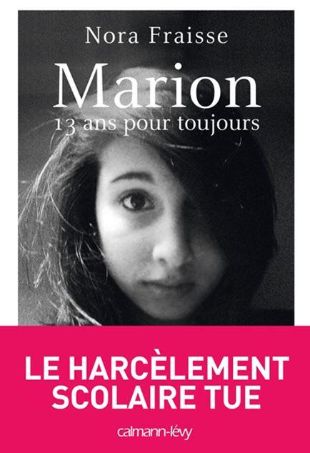
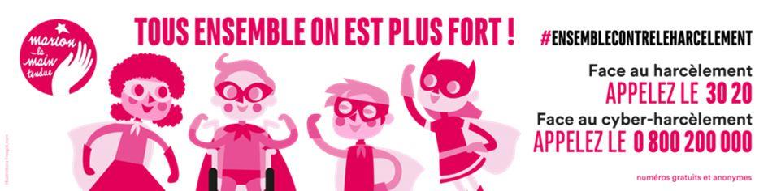

On ne va pas à l’école pour mourir, mais pour s’instruire
par Nicolas BOUVIER

D’après le Ministère de l’Éducation Nationale, un enfant sur dix est victime de harcèlement. Ces chiffres ne sont pas actuels, ils datent de 2012 où l’on estime à environ 700 000 le nombre de victimes. Cependant, on oublie souvent que ces chiffres ne sont qu’une partie de la réalité, car la loi du silence, elle, représentait 22% des jeunes.
Cette statistique a été présentée lors de la Journée Nationale contre le Harcèlement le 5 novembre 2015 dans l’émission « Toute une histoire » sur France 2.
Il y a environ 12 millions de jeunes qui vont à l’école chaque jour, de la maternelle jusqu’au baccalauréat. La seule loi du silence représenterait plus de 2 millions d’élèves, alors que la statistique officielle évoque les victimes recensées (pour avoir parlé, parce que les institutions et/ou les familles ont découvert la situation, etc.).
Au bas mot, on peut estimer à 2 voire 3 millions d’élèves qui vivent le harcèlement en France, en moyenne. En Suisse, par exemple, cela représente 8 % (un à deux élèves par classe) et, en Belgique, 14,5% en moyenne.
Un phénomène mondial, connu depuis toujours, sous d’autres appellations : « Bizutages », « intimidation » (au Canada) et qui s’est développé, multiplié par l’avènement des réseaux sociaux, portables et outils numériques à la portée de tous, dès le plus jeune âge !
Un enfant sur cinq est victime de cyberharcèlement, soit 20 %, deux fois plus que le nombre de victimes dans le cadre de l’école !
24 heures sur 24, 7 jours sur 7, plus de répit, plus de repos, plus de jours de fête, la violence des mots, des images, virtuel, numérique, par messages privés, par commentaires… La victime est un punching-ball permanent.
Cette situation, Pauline Fourment l’a connue. Dans la nuit du 2 au 3 janvier 2012, cette jeune fille âgée de 12 ans se suicide. La presse s’en est fait l’écho à l’époque de manière nationale, car cette jeune fille était la victime de trop. Après des mois de lynchages publics et virtuels, surnommée « garçon manqué », elle a succombé et s’est sacrifiée, laissant une famille en deuil. Une association « Les souffres douleurs » s’est créée en sa mémoire pour mener le combat.
C’est à la suite de cette tragédie que mon propre combat a commencé.
Ancienne victime de harcèlement entre 2001 et 2005 au collège privé (privé/public, le harcèlement est omniprésent), j’ai connu les insultes, les injures, les moqueries, les coups, les crachats, le bizutage, à l’école et dans le milieu sportif.
En surpoids, mal dans ma peau, introverti, isolé, solitaire, respectueux des règlements, j’avais le profil idéal. Je ne suivais pas la meute, le troupeau de camarades qui avait pour principe de transgresser les règles et de mener la vie dure aux enseignants et aux personnels de l’établissement. Des jeunes plus âgés que moi, des redoublants, des cas sociaux, plus grands, plus costauds, unis pour me mener la vie dure.
Mais ils n’ont pas réussi à me tuer de l’intérieur, même si j’ai eu les idées noires pendant plusieurs mois, voire plusieurs années.
Je m’en suis sorti en en parlant à mes parents qui sont intervenus, mais ma situation n’est presque rien comparée à ce qu’ont pu endurer d’autres victimes. Certaines d’entre elles l’ont vécu durant toute leur scolarité sans interruption dans l’indifférence générale et sans sortir du silence !
Ce combat, je l’ai mené pour prendre une revanche sur la vie et pour montrer que ce n’était pas une fatalité. On peut sortir le harcèlement en parlant. L’actualité illustre justement que, sur d’autres sujets tabous comme l’inceste ou la pédophilie, des victimes attendent 20, 30 ans, voire plus avant de libérer la parole !
Croire que l’on peut s’en sortir facilement est un leurre. Il faut avoir vécu ses souffrances pour les comprendre, elles ne se vivent pas procuration !
Aimer l’école et respecter l’institution était considéré comme une forme de marginalité que mes détracteurs ont tenté de détruire. Sans succès.
L’un d’eux avait cette réplique : « Pourquoi t’es pas comme nous ? »
Ne voulant pas leur ressembler, je leur faisais comprendre que je préférais être détesté pour ce que j’étais qu’être aimé pour ce que je n’étais pas.
J’ai fait un choix. Je l’assume encore aujourd’hui.
Depuis cette période, je me suis juré de prendre ma revanche sur la vie et c’est par l’écriture que le déclic s’est produit, dès l’âge de 16 ans.
15 ans plus tard, une dizaine d’ouvrages et des milliers de poèmes ressortent de mon parcours littéraire, mais aussi une libération de la parole, des engagements associatifs ou encore des lettres ouvertes et pétitions, ainsi que des soutiens directs ou indirects à divers mémoires et thèses sur le sujet.
Une médiatisation des victimes s’est accentuée durant ces dix dernières années, accompagnant également d’autres sujets tabous mis en lumière : pédophilie, inceste… La justice morale et virtuelle a pris le dessus sur la justice judiciaire, pour le meilleur et pour le pire.
Parler du harcèlement ne le réduit pas forcément et peut parfois même provoquer un regain de violences, mais ce n’est pas une fatalité de le vivre ni de s’en sortir.
Zéro harcèlement, c’est comme zéro accident de la route, ça n’existera jamais. Néanmoins, il est urgent de poursuivre la prévention par les interventions en milieu scolaire, par les numéros verts qui se déploient, que ce soit au niveau gouvernemental ou par des associations.
Nora Fraisse, par son association Marion La Main Tendue, créée suite au décès de sa fille Marion le 13 février 2013 (à l’âge de 13 ans) a réussi à obtenir, suite à une pétition qui a recueilli plus de 80 000 signatures, une journée nationale contre le harcèlement scolaire qui a lieu chaque jeudi après les vacances de la Toussaint (la première a eu lieu en 2015) ainsi qu’un numéro vert, le 3020 (seulement disponible du lundi au vendredi de 9h à 18h, le samedi de 9h à 20h, hors dimanche, jours fériés et vacances scolaires).
D’autres contacts sont disponibles en guise de soutien :
Net écoute : 0800 200 000 (pour le cyberharcèlement, du lundi au vendredi de 9h à 19h)
E-enfance : 01 56 91 56 56 (assurer la sécurité des enfants sur internet)
Association Contre les Violences Scolaires (acvs 49) : 06 50 97 88 51
Ce sujet est d’intérêt public, faisant plusieurs dizaines, voire centaines de morts chaque année, parfois dans l’indifférence la plus totale.
On ne va pas à l’école pour mourir, mais pour s’instruire !
Pauline, Marion, Alexandre, Matteo et tous les jeunes médiatisés et non médiatisés qui ont fini leur jour si jeune parce que l’école était pour eux un mouroir, une avancée vers l’abattoir, parce que les messages de haine se répandaient partout où la communication était possible, jusque dans leur chambre, la nuit, à l’abri des regards… Voilà aujourd’hui la réalité du harcèlement à l’école, dont le cyberharcèlement est partie prenante, empiétant même sur le harcèlement « classique » que j’ai connu à mon époque.
Enfermé dans son esprit, prisonnier de ses émotions, l’enfant est face à un monde (physique/virtuel) qui lui est hostile.
Avec le temps, j’ai pris conscience que la jeunesse actuelle qui a grandi avec les réseaux sociaux ne sait plus ce qu’est la « vraie vie » que j’ai connue dans mon enfance. Je suis la dernière génération avant l’arrivée des réseaux sociaux et, déjà, il y avait beaucoup de problèmes et des tabous que l’on mettait de côté.
En 2021, c’est une crise sanitaire sans précédent qui créé une atmosphère tellement anxiogène que les enfants ne peuvent plus se toucher, étant masqués du matin au soir, isolés, avec une « distanciation sociale » (oxymore). Le harcèlement médiatique que nous connaissons tous depuis un an avec le virus, concernant les contaminations, les décès, entraînent une schizophrénie collective qui commence dès le plus jeune âge.
L’école est le reflet de la société. Notre société est malade, pas seulement du virus, mais de sa bêtise, de sa violence, de sa haine et de sa perte totale des repères. Dans cette dystopie orwellienne où le monde marche sur la tête, dans cet « Absurdistan » quotidien où on ferme des lieux de culture et d’épanouissement tout en laissant les gens s’entasser dans le métro et les supermarchés, comment ne pas devenir fou ?
Comment nos enfants ne peuvent pas être malades des maux de cette société ?
Nous avons dépassé le cadre des violences scolaires quotidiennes, avec les mots et les coups.
Nous avons une violence collective, médiatique et politique qui englobe toute la société.
« L’éducation est une arme qui peut changer le monde » disait Nelson Mandela.
Utilisons donc cette « arme » pour les générations futures qui ont besoin d’espoir.
Partager cette page